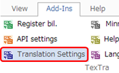
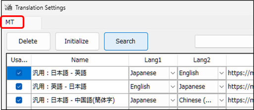
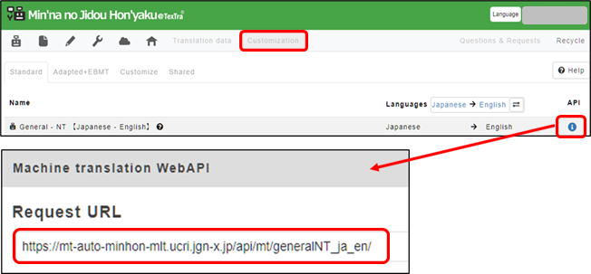
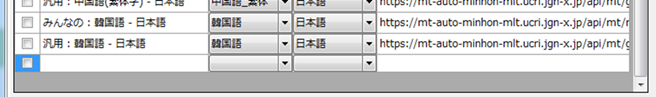

Translation Settings
Set the TexTra Trados Addin.

・ TM API Settings
Set the API to perform machine
translation.
It is possible to translation at the initial
settings.
Please add the api info to the
settings
when you want to translation in other
languages,
or tlanslation on some special
fields.
Add the
translation engine selecting from search
screen.

Machine
translation settings of this screen is
the one displayed in the web
site.
https://mt-auto-minhon-mlt.ucri.jgn-x.jp/content/mt/

Machine Translation APIs can be added on the
bottom of a
list.
(These urls are
different from "Server
url"
explained in the chapter "API Settings".)
